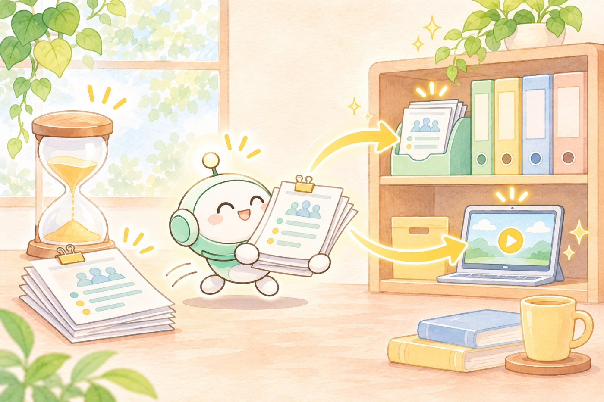
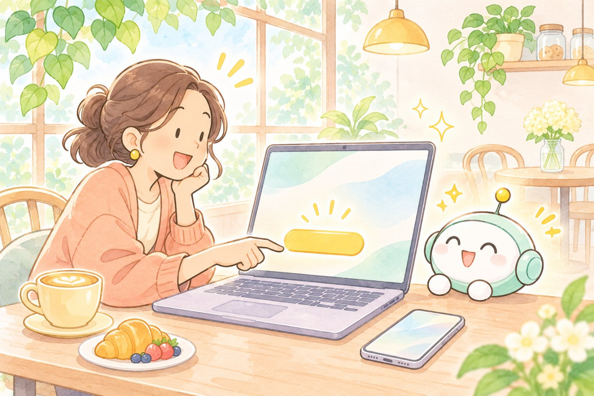

1Circlebackがやってくれること
やることは「録りたい会議のスイッチを入れておく」だけです。
- Googleカレンダーとつなぐ
予定が一覧に出るので、録りたい会議のスイッチをONにします。対面のオフ会やセッションは、スマホかパソコンのアプリで録ります。
- 時間になるとBotが会議に入る
Google MeetなどにBotが参加して、みんなの話を録ってくれます。Botを入れずに、パソコンのアプリだけで録ることもできます。
- 終わって20分ほどで議事録
話した人の名前つきの文字起こし・要点・やること（アクションアイテム）が日本語で届きます。
2無料だと30日で消えるので、その前にAIに取ってきてもらっています
無料プランは、会議と録音の履歴が30日までです。でも無料でもMCP（Claude CodeなどのAIからCirclebackを読む入口）が使えるので、30日以内にAIに取り出してもらえば、手元にずっと残せます。だから私には実質タダで十分なんです✨
Circlebackの中
（30日で消える）
🎙 11/6 広報MTG
🎙 オフ会のセッション
🎙 ひとり語り
取る
自分の置き場
（ずっと残る）
📝 議事録
🎥 録画（限定公開）
📄 文字起こし全文

今日の広報MTGは、こう残しました
- 議事録Claude CodeがMCPで文字起こしを取ってきて、議事録に
決まったこと・担当・まだ決まっていないことに分けて、チームの議事録のドキュメントに今日の日付のタブを足して書いてもらいました。
- 録画録画はYouTubeに限定公開で上げて、リンクをチームの表に
Circlebackの録画を取り出して、YouTubeへ限定公開でアップ。リンクを録画フォルダのスプレッドシートに1行足しました。
- 原本文字起こしの全文は、自分のフォルダへ
あとで「あの時なんて言ってた？」を探せるように、全文を手元に保存しています。
3無料と有料のちがい
8月31日に料金プランが新しくなって、私が有料で使っていた頃（月$25、約4,000円）より安くなりました。
- 議事録・やること・名前つき文字起こし
- オンライン会議も対面も（Bot／パソコンのアプリ／スマホ・Apple Watchのアプリ）
- API・MCP・CLIが使える
- 会議と録音の履歴は30日まで
- 自動化は一部だけ
- Freeのすべて
- 会議の履歴が無制限
- 録音の保存が1年
- Notionなどへの自動連携
- 自分で決めた観点でAIにまとめてもらう
- Proのすべて
- 管理者とメンバーの権限
- 録音の保存が2年
- チームでの利用向け
1人あたりの料金。月払いにすると少し上がります（Proは月$18）。2026年11月6日に公式の料金ページで確認しました。いちばん新しい内容は公式ページで見てください。
4便利なところと、正直いまひとつなところ
半年使ってきた中での感想です。
😊 便利なところ
- 会議が終わって20分ほどで、名前つきの文字起こし・要点・やることが日本語で出てくる
- 無料でもMCPが使えて、Claude CodeやCodexから文字起こし・議事録・録画をそのまま取り出せる
- Botを入れずに、パソコンのアプリだけでも録れる（梅田の3時間のオフ会もパソコン1台で録れました）
- 過去の会議をまとめて「あの時なんて言ってた？」と聞ける
🤔 いまひとつなところ
- スマホで録ると、録れていないことが多かった。私が有料をやめたいちばんの理由です
- 名前の聞き間違いが多い（今日のMTGでは私が「ポケモン」になっていましたｗ）。話している人が入れ替わることも
- 自動の要約に、言っていないことが混ざることがある。大事なところは文字起こしと照らすのがおすすめです
- 長い録音は処理が遅いことがあった（2時間のオフ会が12時間たっても終わらなかった日も）
- Botが会議に入るので、参加者に一言ことわりを入れる。音声はクラウドに上がるので、外に出せない話の会議には向きません
オンライン会議の文字起こしだけなら、いまはGoogle Meet自体にも文字起こしの機能があるので、それで足りることも多いです。私も有料をやめた時は「Meetの文字起こしで代わりになるな」と思いました。Circlebackのよさは、AIから取り出せることと、対面の会議も同じ場所にたまることです。
5ちょっと試してみるなら
無料プランは試用期間ではないので、そのままずっと使えます。
- circleback.ai で無料登録
Googleカレンダーをつなぐと、予定が一覧に出ます。
- 次の会議のスイッチをON
ホーム画面で、録りたい予定のスイッチを入れておきます。入れ忘れると録れないので、ここだけ気をつけてください。
- AIにつなぐ（Claude Codeの場合）
ターミナルで
claude mcp add --transport http circleback https://circleback.ai/api/mcpを実行して、Claude Codeの中で/mcpからログインします。ClaudeやChatGPTのアプリからもつなげます。
Circlebackから、今日の会議の文字起こしと議事録を取ってきて。 決まったこと・担当すること・まだ決まっていないことに分けて、 （保存したいフォルダ）に保存してね。
